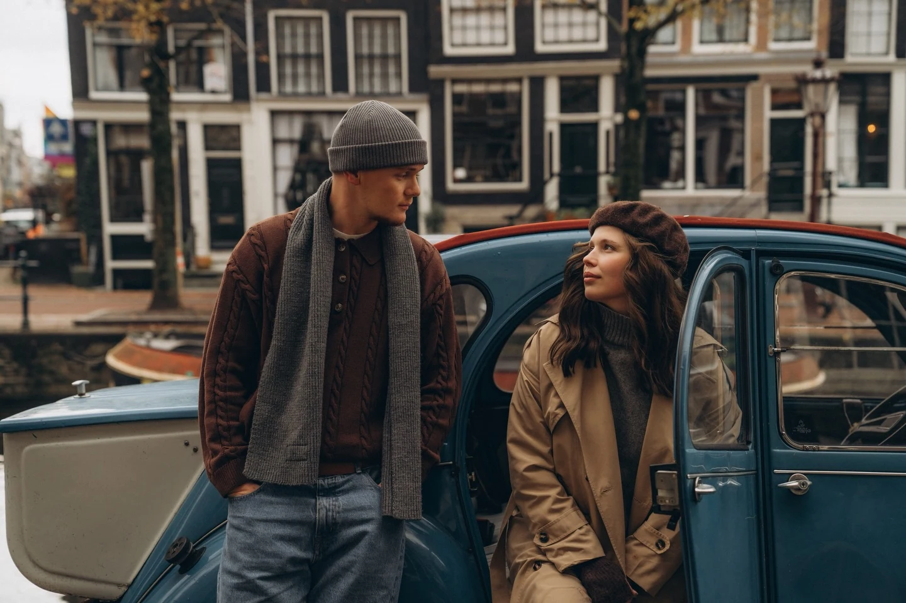
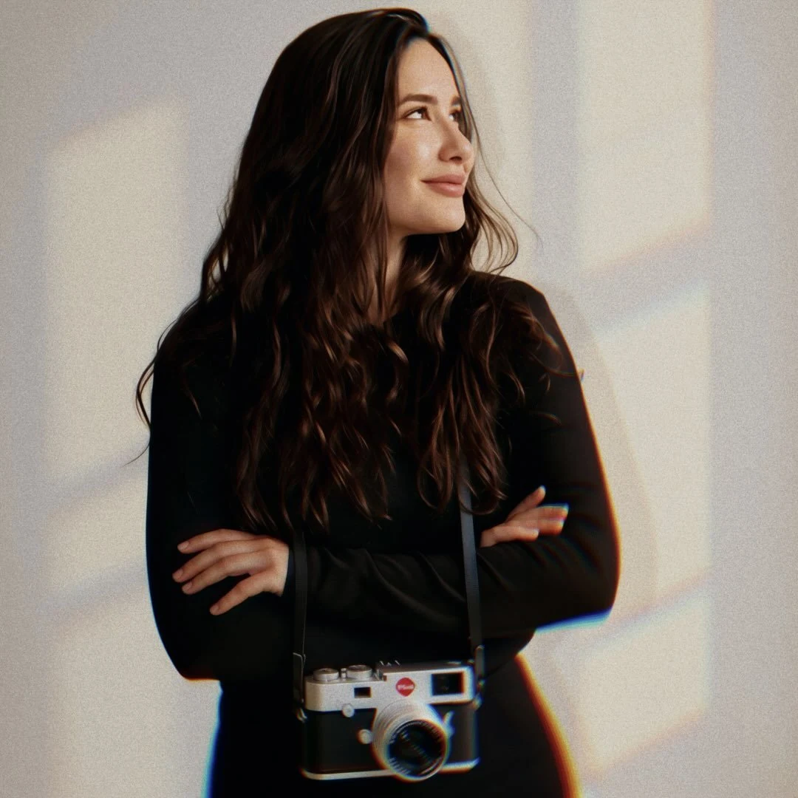

& wherever your story goes
A feeling.Kept forever.
Cinematic photography for the people, places and moments you want to hold on to.
Discover the workWedding, couples & portrait photographer
Based in the Netherlands
Life moves.
Photographs let
us stay a little.
I’m Viktoriia, the photographer behind Vicon Creator. I photograph weddings, love stories, portraits and the chapters in between. With warm light, thoughtful colour and a little direction, we create something that feels like you.
Meet your photographer



Hi, I’m Viktoriia.
I notice the little things.
The light falling across a face. A look that lasts a second. The closeness you forget anyone else can see. These are the things I look for — and the things I want you to recognise in your photographs.
A little more about meRemember the light.
Keep the feeling.
From a first hello
to your favourite frame.
Tell me your story
Share what you’re planning, where and when. We’ll talk about the atmosphere, the practical details and the right session for you.
Be in the moment
We’ll make space for natural moments, with guidance when you need it. You can move, laugh, take a breath and simply be yourself.
Keep the feeling
A thoughtful selection and a consistent edit bring the photographs together. Your delivery details are agreed before the shoot.
Close to home.
Open to elsewhere.
Based in the Netherlands, I work across Amsterdam, The Hague, Rotterdam, Utrecht, Delft and the rest of the Netherlands. For a celebration in Belgium or elsewhere in Europe, let’s talk about the journey.
Some moments
are worth keeping.
Tell me what you have in mind. A date, a place, a feeling — we’ll begin there.
Let’s make memories